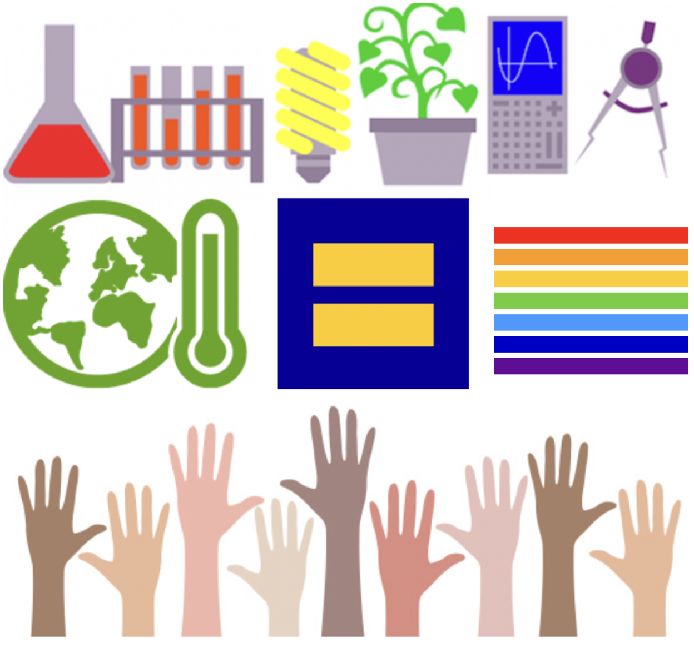

Our values that we seek to promote in and by means of our research work are best described by the famous phrase of Malcolm Forbes, an American entrepreneur and publisher, that “diversity is the art of thinking independently together”. At the SEARCH group, we are inspired by this art of individualism, intellectual meritocracy, social cohesion and team work to advance energy sciences.
Update — Sep. 2026: I first put the statement above on my web page in early 2016. For over a decade, I’ve been suggested, asked, encouraged — and once, at NYU, pressured and ordered by now (prematurely) retired leader who claimed that in her opinion this statement “didn’t go far enough.&rdquo — to change this statement to fit the short-term goals or politics of the moment. I always politely declined such requests, regardless of their nature which often was out of cocern for me. Values may evolve but stick longer; coerced values disappear as quickly as the door closes behind their advocates - just look how quickly the Berlin Wall or the Iron Curtain collapse.. The value statement above survived unchanged Obama-2, Trump-1, Biden, and Trump-2 and I intend to keep it up in this form because it is apolitical, grounded in science and my beliefs. I’m happy to discuss it — but not to fake it.
